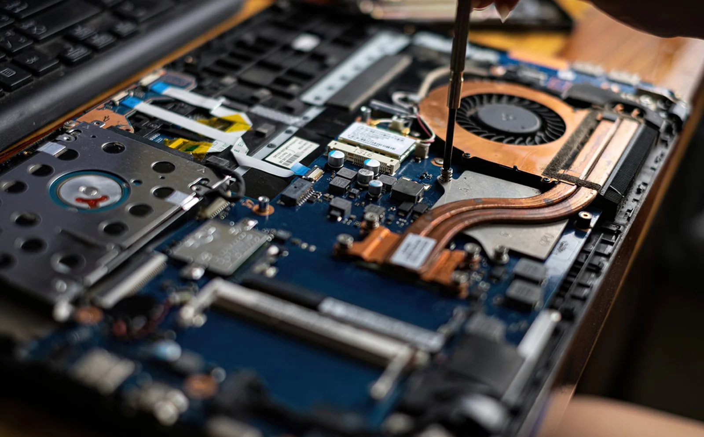

Habilidades
Suporte Informático
Instalação, configuração e manutenção de sistemas informáticos e apoio técnico a utilizadores.
Electricidade Industrial
Conhecimento em montagem e manutenção de sistemas elétricos e circuitos.

Instalação e Manutenção
Montagem, diagnóstico e reparação de equipamentos informáticos e periféricos.
Configuração de Redes
Noções básicas de redes locais (LAN), ligação de dispositivos e partilha de recursos.

Meus Projectos

Projecto 1

Projecto 2

Projecto 3
Sobre Mim
Sou Kelvin Luciano Sérgio Nhamussua, natural de Maputo, Moçambique. Sou um jovem dedicado e curioso, apaixonado por tecnologia, atualmente a concluir o curso de Suporte Informático (CV4) no Instituto de Transportes e Comunicações. Desde cedo desenvolvi interesse por computadores e sistemas, o que me levou a formar uma base sólida em informática e eletricidade industrial.
Iniciei a minha experiência profissional como Auxiliar Administrativo e mais tarde atuei como Técnico de Suporte na empresa Prosafety Lda, onde desenvolvi competências em atendimento técnico, resolução de problemas e gestão de equipamentos. Sou uma pessoa responsável, comunicativa e com grande vontade de aprender, sempre em busca de novos desafios que me ajudem a evoluir profissionalmente.